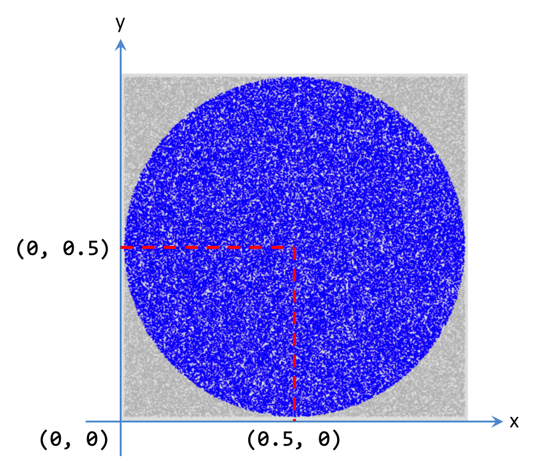

Lab 0: Circle and Point
Basic Information
- Deadline: 29 August 2023, Tuesday, 23:59 SST
- Marks: 0
- Weightage: 0%
Prerequisite
- Familiar with the CS2030S lab guidelines.
- Able to access the CS2030S programming environment via ssh.
- Completed basic
vimlessons.
Files
In the directory, you should see the following files:
- Skeleton Java Files:
Point.java: Skeleton file forPointclass.RandomPoint.java: Skeleton file forRandomPointclass.Circle.java: Skeleton file forCircleclass.Lab0.java: The main program.
- Input/Output Files:
inputs/Lab0.k.infor the input files.outputs/Lab0.k.outfor the output files.
- Bash Script:
test.sh: TestingLab0if it estimates \(\pi\) correctly by comparing the output when runningLab0oninputs/Lab0.k.inwith the expected output inoutputs/Lab0.k.out.
- Unit Tests:
Test1.javatoTest3.javato test individual classes for expected behavior.
Tasks
A skeleton code has been given. Your task is to complete the implementation of the classes Point, RandomPoint, Circle, and Lab0, according to the OO principles that were taught: abstraction, encapsulation, information hiding, inheritance, tell-don't-ask.
Accepting the Task
To accept the task, you first need to do the following:
- Set up
.gitconfig. - Set up password-less login.
- Login to PE hosts.
- You may want to create a new directory
mkdir CS2030S-2324-S1-Labs. - Go into the directory (if created).
- Run
sh ~cs2030s/get-lab0(from inside the directory if needed).
Task 1: Point Class
Fill in the class Point with the constructor and the necessary fields. Add a toString method so that a string representation as shown in the examples below is returned.
For instance,
1 | |
should return the string:
1 | |
You will need to come back to this class and add other methods later. For now, check that your constructor and toString methods are correct.
Some simple tests are provided in the file Test1.java. Note that these test cases are not exhaustive and you are encouraged to test your Point class on your own. Proceed to the next class if you are convinced your Point class is correct.
1 2 3 4 | |
As an aside, note that we do not need to explicitly compile Point.java. Since Test1.java refers to the Point class, javac is smart enough to compile Point.java if Point.class is not found, or recompile Point.java if it is newer than Point.class.
Task #2: Circle Class
Most of the Circle class has been written for you. You need to complete the method contains. The method checks if a given point is contained in the calling Circle object. To complete this method according to the tell-don't-ask principle, you will need to add a method in the Point class.
Some simple tests are provided in the file Test2.java. These test cases are not exhaustive and you are encouraged to test your Circle class extensively.
1 2 3 4 5 6 7 8 | |
Take a break from programming. Go for a random walk.

Luckily, Java provides a class java.util.Random to help you take a random walk. This class encapsulates a pseudo-random number generator. First, you need to import.
1 | |
We can then create a random number generator with a seed:
1 | |
We can then call rng.nextDouble() repeatedly to generate
random numbers between 0 and 1.
1 2 3 | |
Using a fixed seed is important for testing since the execution of the program will be deterministic, even when random numbers are involved.
Which brings us to the next task. Hope you had a great random walk.
Task 3: RandomPoint Class
RandomPoint is a subclass of Point that represents a randomly generated point. The random number generator that generates a random point has a default seed of 1. There is a public method setSeed() that we can use to update the seed. Here is how it can be used:
To generate a new point,
1 | |
minX, minY, maxX, maxY represent the minimum and maximum possible x and y values respectively, for each randomly generated point.
To set the random seed,
1 | |
Tips
What are the fields and methods that should be associated with the class RandomPoint instead of an instance of RandomPoint?
Some simple tests are provided in the file Test3.java. These test cases are not exhaustive and you are encouraged to test your RandomPoint class extensively.
1 2 3 4 5 6 7 | |
Task #4: Estimating Pi using Monte Carlo Method
The Monte Carlo method for estimating the value of \(\pi\) is as follows. We have a square of width \(2r\), and within it, a circle with a radius of \(r\).
We randomly generate \(k\) points within the square. We count how many points fall within the circle. Suppose \(n\) points out of \(k\) fall within the circle.
Since the area of the square is \(4r^2\) and the area of the circle is \(\pi r^2\), the ratio between them is \(\pi/4\). The ratio \(n/k\) should therefore be \(\pi/4\), and \(\pi\) can be estimated as \(4n/k\).
Lab0
Lab0 is the main program to solve the problem above. The main method is provided. It includes the method to read in the number of points and the seed from the standard input and to print the estimated pi value.
The method estimatePi is incomplete. Determine how you should declare estimatePi, then complete the body by generating random points and count how many fall under the given circle.
Use a circle centred at (0.5,0.5) with radius 0.5 for this purpose. Use long and double within estimatePi for computation to ensure that you have the right precision.

Tips
In Java, using / on two integers result in an integer division. Make sure one of the operand of / is a floating point number if you intend to use / for floating point division.
Running and Testing
To run Lab0 and enter the input manually, run
1 | |
The program will pause, waiting for inputs from keyboards.Enter two numbers. The first is the number of points. The second is the seed.
You can enter the two numbers into a text file, say, TEST, and then run
1 | |
Sample inputs and outputs have been provided and can be found under the inputs and outputs directory.
To test your implementation of Lab0, automatically against the test data given in inputs and outputs,
1 | |
WOOPSIE
Introducing the "Wonderful OOP SanItizEr" also called as WOOPSIE. This is a static analysis tool that will help check some general OOP property of your program. Its outputs are potentially a series of "CHECK". These are suggestions to help you not to lose mark.
Please note that the checks that can be performed by WOOPSIE are merely suggestions. In particular, we reduced the precision because a checker that is too eager will give too many checks. Many of these checks will be a false positive. Such checker are not a useful checker and you may not even want to use that.
Additionally, the coverage of the checker may be limited. You can, after all, try to fool it by making your code unnecessarily complicated. We try to hit a sweet spot where if you follow the lab guide, WOOPSIE may give the most optimal benefit with minimal false positives.
To run WOOPSIE on all .java file in your current directory, type the following:
1 | |
To run WOOPSIE on a specific file(s), you can specify the files that you wish to be checked. For instance,
1 | |
WOOPSIE may run even if your program cannot compile. The requirement is simply that we it can parse your program. So if the compilation error is due to type issues, WOOPSIE can still check for some common errors. Some messages that you may see includes:
1 2 | |